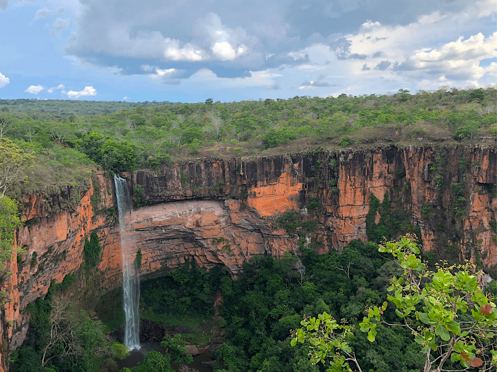
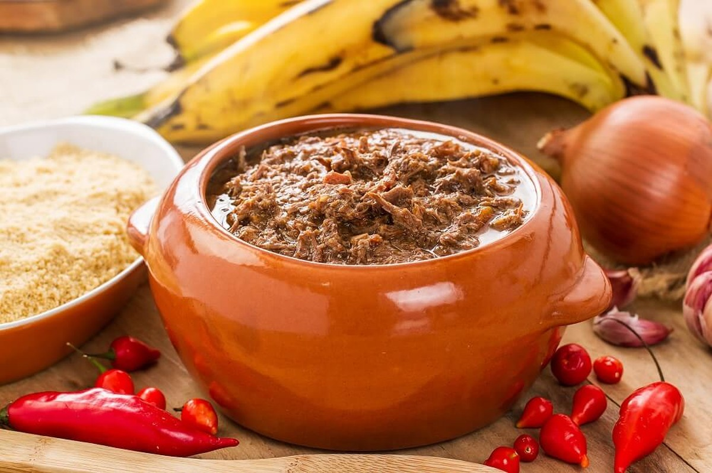

Algumas sites de fotos bacanas com paisagens, belas moças e comidas variadas para planejar sua próxima viagem ou devaneio mental entre um projeto e outro:
Paisagens
Site da CNN que sugere 20 lugares mais bonitos do Brazil.

Belas Moças
O site HOODMWR escolheu 50 belas moças no ano de 2023.
Comidas Variadas
Comidas típicas da culinária brasileira, excelente referência para sua próxima viagem.
